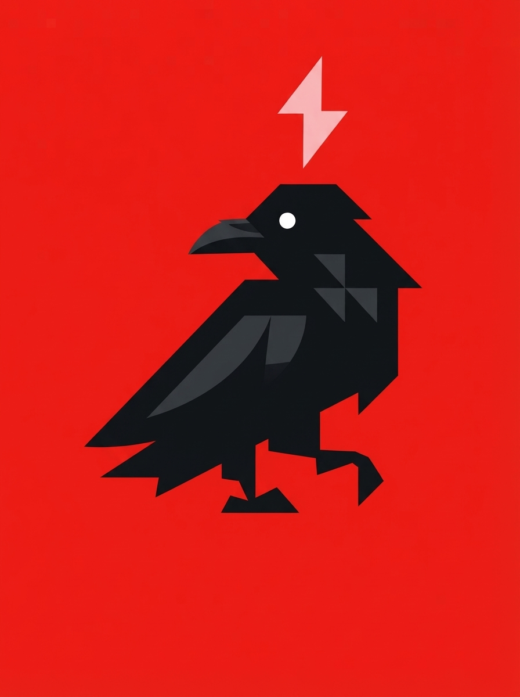

Grow the disease. Reverse it.
Every tumor removed in surgery is usually thrown away. XYPHON asks the patient first, then banks it. Real human tumor tissue, grown into a living culture outside the body — one that keeps behaving like the actual disease, not a mouse standing in for it. Test candidate cures directly on human cancer and see what really works, in weeks instead of years.
A surgeon removes a tumor, the patient consents, and we keep the sample. Grown into a living culture that keeps behaving like the real cancer — not a mouse standing in for it.
Cures go straight onto real human tumor tissue, not lab mice. See exactly how a compound performs against the actual disease before it ever reaches a patient.
The application for research groups — biology and chemistry, AI-assisted. Match a tumor's profile to compound libraries, simulate outcomes, cross-reference medical literature, get cure suggestions from the AI.

XYPHON's first specialization is the tumor bank — surgical tumor tissue, donated with consent, grown into living organoid cultures that behave like the real disease. No synthetic strains, no lab mice standing in for a human tumor. Just the real thing, studied directly.
Every tumor comes from a real surgery, with explicit patient consent and de-identification. Nothing synthetic, nothing farmed to be aggressive.
Grown into 3D organoid cultures that keep the tumor's real genetic and structural fingerprint, so a drug's response actually means something.
Approved research partners test candidate compounds directly against banked tumor samples — real tissue, not an animal proxy.
Every sample is patient-donated with informed consent and de-identified before it enters the bank. Nothing is taken without permission, and no data is ever linked back to a patient.
Grouped the way a finished product would be. Click any module to see what it does.
A live picture of banked-sample research across the grid — the same view a medical research lab watches, rendered for authorized research only.
Much like TYPHON is an app for offensive security — PHAGEIO is the app for biological studies. For research groups to use. Matches a real tumor's profile to candidate compounds and simulates the result, fast. Biology and chemistry, both — because chemistry is needed for biology.
The AI suggests experiments, simulates outcomes, cuts cure development from years to weeks — starting from real tumor data.
AI reads libraries of medical information and research, cross-references, suggests cures and experiments.
Real tumors don't behave like mice. Test on the real thing, and the result actually means something.
A single download that sets up the biology and chemistry workspace. Early build — rough edges expected, shipping fast. Research use only.